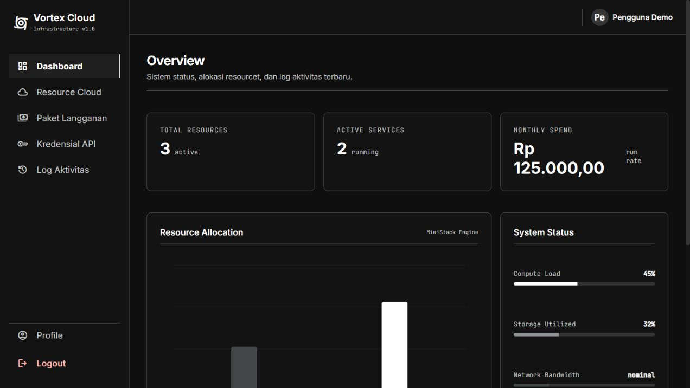
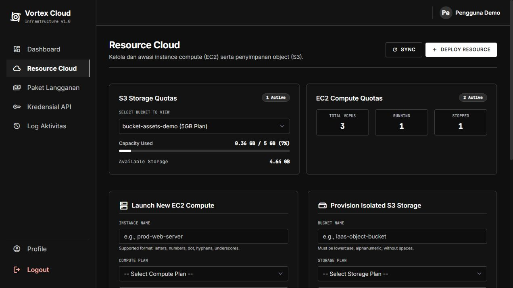
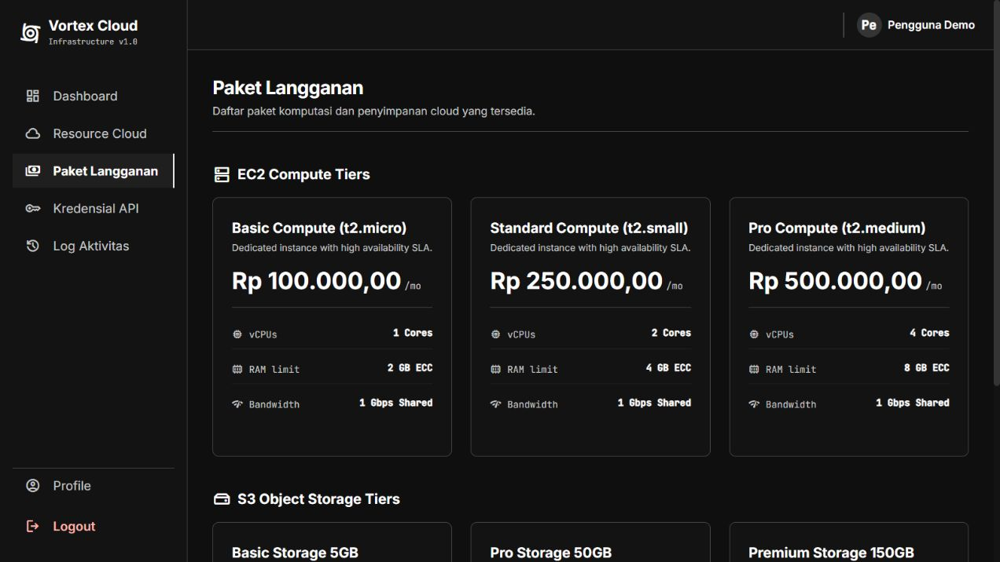

Simulasi layanan cloud · Backend
Vortex Cloud · Resource Manager
Satu dashboard untuk memahami sumber daya dan biaya cloud. Proyek ini mensimulasikan pengelolaan instance komputasi, penyimpanan objek, dan langganan layanan.
- Konteks proyek
- Proyek kolaboratif pembelajaran cloud dengan simulasi layanan.
- Untuk siapa
- Pengguna layanan cloud dan pengelola langganan dalam konteks proyek pembelajaran.
- Kontribusi saya
- Kontribusi pada backend dan lingkungan cloud bersama tim.
Tampilan aplikasi asli
Lihat langsung antarmukanya tanpa perlu membuka repositori.


Dashboard Vortex Cloud
Dashboard asli merangkum jumlah sumber daya, layanan aktif, estimasi biaya, alokasi, serta aktivitas sistem. Semua angka pada screenshot ini berasal dari data demonstrasi.


Sumber daya komputasi & penyimpanan
Antarmuka asli memperlihatkan kuota penyimpanan S3, kapasitas EC2, serta formulir penyediaan sumber daya. Preview tidak membuat server atau penyimpanan sungguhan.


Pilihan paket langganan
Halaman asli menampilkan tingkatan paket komputasi dan penyimpanan. Harga serta spesifikasi yang terlihat adalah contoh dari lingkungan dokumentasi.
Tangkapan layar diambil dari antarmuka aplikasi asli pada lingkungan lokal dengan data demo. Teks di dalam gambar mengikuti bahasa aplikasi.
Mengapa proyek ini dibuat?
Masalahnya
Sumber daya komputasi, kapasitas penyimpanan, dan perkiraan tagihan perlu dilihat bersama agar penggunaan mudah dipantau.
Pendekatannya
Dashboard menyusun pengelolaan instance, bucket penyimpanan, kuota, dan estimasi tagihan bulanan.
Yang bisa dilakukan pengguna
-
Instance komputasi
Menyimulasikan pencatatan dan pengelolaan sumber daya server.
-
Penyimpanan objek
Mengelola gambaran bucket serta kuota penyimpanan.
-
Estimasi tagihan
Menampilkan perkiraan biaya bulanan berdasarkan langganan sumber daya.
-
API & lingkungan layanan
Akses API memakai kunci, dengan lingkungan aplikasi disusun melalui Docker Compose.
Teknologi & dokumentasi
- Laravel
- MySQL
- Docker Compose
- Nginx / PHP-FPM
- REST API
Tentang dokumentasi preview
Tangkapan layar dari template Blade dan CSS/JS asli Vortex Cloud, diperoleh dari repositori raihan2030/proyek-cloud-computing. Akun, paket, sumber daya, biaya, dan respons penyimpanan memakai data lokal demonstrasi tanpa koneksi AWS.